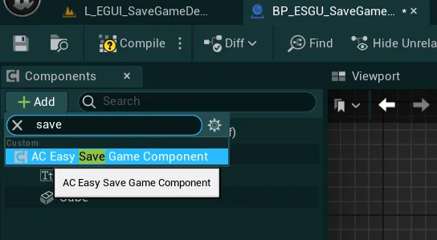
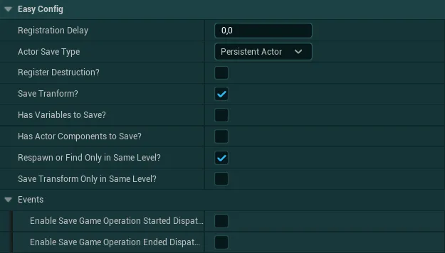
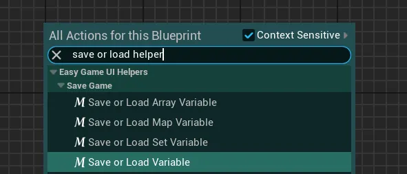
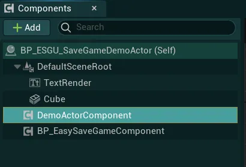
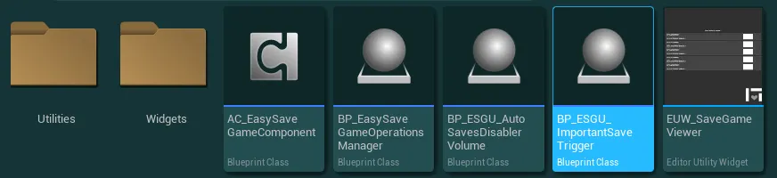
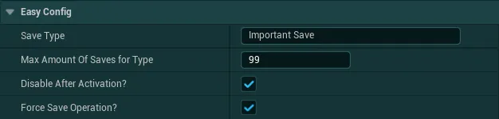
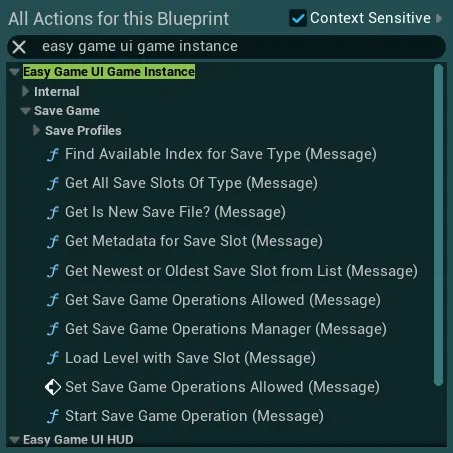
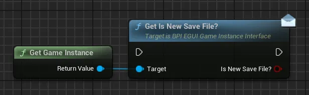

存档系统¶
开箱即用，UI 的所有功能无需任何额外实现即可使用，并可从内置的主菜单或暂停菜单中访问。不过，要让存档系统应用到你的游戏中，你需要在各个 Actor 中完成相应的设置。
你可以在以下指南中找到所有必要的细节：
世界 Actor 存档设置¶
默认情况下，玩家控制器及其控制的 Pawn/角色会按各个持久关卡（persistent level）保存其世界变换；你可以在 Global Config Data Asset 的 Save Player Tranform? 变量中禁用此行为。
内置的存档系统还可以保存你世界中的任意 Actor。你可以对任意 Actor 蓝图执行下面的实现流程，也可以直接在世界中对任意 Actor 执行（第二种方式无法保存变量）。
存档组件设置¶
开始设置存档组件时，请打开你想要保存的 Actor 蓝图，或在世界中选中任意 Actor，然后在 Actor 组件中点击 Add 按钮并添加 AC Easy Save Game Component

添加之后，选中该组件并查看细节（Details）面板，其中有多个选项需要配置： 

-
Registration Delay定义在存档操作管理器上触发注册之前的延迟。
对于在关卡中很早就生成的 Actor（例如 GameMode），建议增大此延迟（例如 0.2s）。 -
Actor Save Type该变量定义保存时 Actor 的处理方式，这取决于它们的生成方式。
正确设置此变量对于确保 Actor 按预期方式保存非常重要共有 3 种 Actor 类型：
Persistent Actors- 由你在编辑器中手动放置在世界中的任意 Actor这种 Actor 类型是保存时最可靠的方式，如有可能，绝大多数（甚至全部）Actor 都应作为持久类型保存，以获得最佳性能与可靠性。
示例：世界中的可交互 Actor，或具有不同状态的目标区域，都属于手动放置且可作为持久类型保存的 Actor。
请注意，这只适用于你手动放置在世界中的 Actor。某些情况下，Player Character 这类 Actor 在编辑器中似乎可行，但在打包构建（packaged build）中并不可靠（Player Character/Controller 应设置为
Find Similar Actor on Load）。Actors to Find (Find Similar Actor on Load)- 在运行时始终由代码或引擎生成的任意 Actor（玩家、GameMode、HUD）这适用于所有在运行时始终由代码（你的代码或引擎）生成的 Actor，例如 Player（Character、Controller、State）、GameMode、游戏 HUD 类。
只有当通过这种方式在运行时生成的 Actor 数量始终一致时，这种 Actor 保存方式才可靠。
示例：玩家角色就是一个例子，游戏开始时引擎会自动将其生成到地图上，而不是手动放置在地图中
Actors to Respawn (Respawn actor on Load)- 在运行时由代码响应某个游戏事件而生成的任意 Actor某个 Actor to Respawn 一旦被保存，就会连同其所有数据（如有）自动重新生成。
示例：玩家使用房屋建造系统放置的墙壁就属于需要重新生成的 Actor，它由代码（建造系统）在运行时独立生成，而且并非总是存在于世界中（若玩家未建造则不存在）
-
Register Destruction若为 true，当对该 Actor 调用“Destroy Actor”函数时，它将被保存为已销毁状态。注册为已销毁的 Actor 在加载存档时会自动再次被销毁。
-
Save Transform若为 true，将保存该 Actor 在世界中的 Root Transform（Location、Rotation、Scale）。如果你想保存该 Actor 其他组件的任何局部变换，则需要将其作为变量保存。
-
Has Variables to Save?如果你想为该 Actor 保存任何变量，需要将此设置为 True。（关于保存变量的更多细节见下文）
若为 False，则不保存任何变量（仅在启用时保存销毁状态与变换）
-
Has Actor Components to Save?如果你的 Actor 有任何也需要保存变量的代码组件，可以将此项设置为 True。任何实现了
BPI_ESGU_SaveGameInterface的组件都会与 Actor 一同处理。（关于组件保存的更多细节见下文） -
Respawn or Find Only in Same Level对于类型为
Respaw Actor on Load或Find Similar Actor on Load的 Actor，该变量可让你控制这些 Actor 的数据如何跨关卡共享。若为 True，所有数据仅在它们生成时所在的持久关卡中保存与加载。
若为 False，该 Actor 可在任意关卡中重新生成或被查找。如果你希望借助它在多个持久关卡之间“传递”数据（例如玩家角色），这会很有用。 -
Save Transform Only in Same Level?对于类型为
Respaw Actor on Load或Find Similar Actor on Load的 Actor，该变量可让你控制这些 Actor 的变换如何跨关卡共享（前提是保存了 Transform）。若为 True，该 Actor 的 Transform 只会在与保存时相同的关卡中加载（每个持久关卡一个变换）。
若为 False，该 Actor 的 Transform 将在任意关卡中加载。默认情况下，如果
Respawn or Find Only in Same Level设为 True，此设置不起任何作用 -
Events这些选项允许你启用与存档游戏操作相关的各种事件。
将
Enable Save Game Operation Started Dispatcher?或Enable Save Game Operation Ended Dispatcher?设为 True 后，即可在拥有存档游戏组件的 Actor 上监听相关事件。
当你需要在存档操作开始或结束时执行某些逻辑时，这些事件会很有用。
变量保存/加载¶
要将变量随 Actor 一起保存，请确保在组件中将 Has Variables to Save? 设置设为 True。
-
然后点击事件
Loading or Saving Variables旁的+按钮（仍在配置所在的同一 Details 面板中）
该事件随后会被添加到你的事件图表（Event Graph）中。当请求新的存档或加载存档时，该事件就会被触发。

-
在辅助节点（helpers）中，你现在可以搜索宏节点
Save or Load Variable
该节点根据你要保存的变量类型有四种变体（Array、Map、Set 或普通变量）放置后，你会看到如下图所示的各类输入与输出引脚

-
首先需要将输入执行引脚（白色）与你之前添加的事件或另一个
Save or Load Variable节点相连你还需要连接事件中的
Operation Type引脚与Json Object引脚
-
然后，在
Variable Name字段中为该变量设置一个唯一的名称（在同一 Actor 蓝图类中必须唯一，不同 Actor 类可以使用相同的变量名）
-
最后，获取你想要保存的值（变量或其他任何内容），并将其连接到灰色的
Value to Save引脚最后，通过
Loaded输出引脚，你可以用加载的值来设置你的变量
关于
Structure变量的重要说明在某些情况下，你可能会发现 Structure 类型的变量无法正确加载。
如果遇到此问题，只需照常使用
Save or Load Variable节点，但不要直接从Loaded Value引脚设置变量，而是先放置一个Get Field节点。在该 Get Field 节点上，将
Json Object引脚连接到与Settings Json File引脚相同的值，并写入与Save or Load Variable节点完全相同的变量名最后，把设置变量节点连接到该
Get Field节点上
关于 UE 5.3 & 5.4 中
Map变量的重要说明由于 Unreal Engine 5.3 & 5.4 中的引擎 bug（较新版本没有此问题），Map 变量在连接到通配符节点时可能会出现问题，并显示为“不完整”，如下所示：

如果遇到此问题，只需照常连接所有节点，然后右键点击宏并选择“Expand Node”
随后你会得到这样的节点，所有连接仍应正确连接，并且执行引脚都已为所有需要的操作标注好
你也可以随意在变量保存之后通过
Saved输出引脚添加任何逻辑，或者如果希望有某种回退处理，也可以在Failed to load引脚中执行任何自定义逻辑。要保存你的所有变量，你可以放置任意数量的
Save or Load Variable节点，只需记得将Operation Type和Settings Json File引脚连接到事件即可
提示
如果因任何原因你需要为持久 Actor 加载在文件加载期间未初始加载的变量，可以从 Save Game Component 调用
Request Load Variables函数。这会立即从最新存档文件中加载与给定 Actor 关联的数据
这仅适用于类型为
Persistent且尚未被标记为已销毁的 Actor，因为只有这些 Actor 即使在存档文件加载之后仍可被唯一识别


Actor 组件保存¶
要随 Actor 一起保存任何代码 Actor 组件，请确保在保存组件中将 Has Actor Components to Save? 设置为 True。
为了被考虑在内，该组件必须是已保存 Actor 的一部分 

-
打开你希望保存的 Actor 组件蓝图，然后前往
Class Settings -
接着，在
Details面板中的Interfaces下，将接口BPI_ESGU_SaveGameInterface添加到你的类中 -
从接口函数列表中，实现
Save or Load Variables事件 -
借助此事件，只需按照与之前相同的说明即可保存你的组件变量


附加对象保存与使用你自己的逻辑进行扩展¶
除了保存世界中的 Actor，该系统还支持保存非 Actor 对象，例如 Game Instance 或其他 Unreal 存档对象。如果愿意，你也可以完全替换该系统
保存其他 Unreal 存档对象¶
-
要保存其他 Unreal 存档对象，首先打开
BP_EasySaveGameOperationsManager并找到Additional Saving/Additional Loading节点 -
在
Additional Saving节点中，你可以使用提供的宏Save Object to Slot，只需输入你自己的 Save Game Object 并为该对象设置一个唯一名称。随后系统会处理其余部分，将对象保存到正确的存档槽等警告
为了让存档得到正确处理，请确保始终将每条执行路径都连接到图的
Completed节点 -
然后在
Additional Loading节点中，你可以使用与保存时相同名称的宏Load Object From Slot来取回存档对象，并从中加载任何内容


保存 Game Instance 变量¶
-
要保存 Game Instance 中的变量，只需打开你的游戏实例蓝图，然后前往
Class Settings -
接着，在 Details 面板中的 Interfaces 下，将接口
BPI_ESGU_SaveGameInterface添加到你的类中 -
从接口函数列表中，实现
Save or Load Variables事件 -
借助此事件，只需按照与之前相同的说明即可保存你的 Game Instance 变量
信息
由于 Game Instance 在关卡加载之间是持久的，通过该系统加载的数据永远不会被“清除”。如果你认为这可能引发问题，我建议实现一种清理这些数据的方法，尤其是在创建新游戏时
同样，你也可以保存任何其他非 Actor 对象的数据（要保存其他 Unreal Save Object，请查看上一节）：
-
首先，按照前面针对 Game Instance 所述的方式，为你的对象设置保存蓝图接口和变量保存
-
然后，打开
BP_EasySaveGameOperationsManager并找到Additional Saving/Additional Loading节点 -
在
Additional Saving节点中，你可以使用提供的函数Save or Load Additional Object。在Operation Type中选择Save接着，在
Object To Save引脚中连接将要调用保存/加载事件的对象。在Save Game Object中直接连接变量Current Save Game Object最后，将
Save Index设置为大于 0 的唯一整数值（0 保留给 Game Instance）。如果你有多个这样的对象需要保存，只需每次递增该值即可。 -
然后在
Additional Loading节点中，复用同一函数并保持相同参数，只需将Operation Type设置为Load

使用你自己的逻辑进行扩展¶
- 如果你希望用你自己的系统扩展/替换内置的存档系统，可以很容易地在
BP_EasySaveGameOperationsManager中完成 -
你会找到两个已注释的区域，可以根据自身需求进行修改。
System Saving/Loading是默认负责保存和加载的全部逻辑，如果你不打算使用内置系统，可以断开这些节点（不要删除它们）右侧的
Additional Saving和Additional Loading节点是你添加自己的保存/加载逻辑以供执行的地方。仅修改这一部分时，内置系统仍将负责处理存档槽、UI、触发保存/加载，但实际逻辑将通过你自己的系统运行。如果你只需要保存其他 Unreal 存档对象，请查看前面的章节。
-
为了确保更清晰的文件夹结构，强烈建议使用提供的
Get Current Save slot as Path此函数返回格式化后的目标文件夹
[ProfileName]/[SlotName]/[SaveObjectType]。如果当前没有选择任何配置文件，则只会返回[SlotName]/[SaveObjectType]如果你希望获取系统上的实际文件夹路径，只需使用
Get Save Files Path函数（其中已包含配置文件文件夹），然后附加Current Save Slot变量和你想要的文件名即可


存档系统用法¶
存档游戏系统可以在多个方面进行调整，从而帮助你将加载和保存体验定制为适合你的游戏。
许多设置可以直接在你的 Global Config Data Asset 的 Save Game 部分中进行调整。此外，你还可以根据需求实现和调整以下功能：
快速存档¶
默认情况下，快速存档和快速读档绑定在 IMC_EGUI_DemoInputs（EasyGameUI/DemoContent/Inputs）中

如果你想在自己的 Input Mapping Context 中实现这些功能，只需添加 IA_QuickSave 和 IA_QuickLoad 并设置你想要的按键。我选择的默认绑定是 F5 用于保存、F6 用于加载，没有设置任何手柄按键，因为手柄上很少有这样的功能。你可以随意添加任何按键。
完成之后，只要该 Input Mapping Context 在你的玩家控制器上处于激活状态，快速存档与快速读档功能即可使用，无需其他配置
重要/检查点存档¶
你可以使用重要存档触发器，轻松地在关卡中设置存档：当玩家与触发器重叠时便会触发
要设置重要/检查点存档触发器，请前往 EasyGameUI/EasySaveGameUI/Core 文件夹，找到 BP_ESGU_ImportantSaveTrigger

放置之后，你可以在细节面板（Details Panel）中找到几项可修改的设置 

Save Type存档类型的唯一名称，默认为“Important Save”Max Amount of Saves For Type该指定类型可创建的存档数量限制；如果存档数量超过允许值，最旧的存档将被覆盖Disable After Activation如果你希望此触发器只激活一次，请勾选此框；若为 true，则即使存档后重新加载世界，玩家也永远无法再次触发该触发器Force Save Operation?若为 True，即使配置中不允许存档，触发器也会强制执行存档操作
自动存档禁用体积¶
自动存档默认启用，并可通过全局配置进行设置；它会按定义的时间间隔触发，但你可能希望在关卡的特定区域（例如 Boss 战区域）禁用自动存档。为此，你可以使用自动存档禁用体积（Auto Saves Disabler Volume，一种在其范围内无法触发自动存档的体积）：
要设置该体积，请前往 EasyGameUI/EasySaveGameUI/Core 文件夹，找到 BP_ESGU_AutoSavesDisablerVolume

然后只需将其放置到世界中，并调整触发器盒的大小以覆盖目标区域。玩家进入该体积时自动存档即被禁用，离开时重新启用（仅当配置中启用了自动存档时）
手动触发存档或读档¶
如果你想在代码中随时手动触发存档或读档，可以使用以下 Game Instance 函数 

其中一些函数只是简单的辅助工具，用于获取存档槽、判断当前存档是否为空白存档文件等。你可以在下方折叠项中查看有关存档/读档的更多细节
保存到存档文件
要进行保存，你可以先使用 Find Available Index for Save Type 函数来获取一个空的存档槽

该函数用于确保不会覆盖任何先前的存档文件（你当然也可以覆盖，但需自行承担风险）
你只需传入所需的存档类型（存档唯一名称）以及该存档类型允许的槽位数量；如果已有槽位超过允许值，最旧的将被覆盖
确定目标槽位后，你可以使用 Start Save Game Operation 函数来触发实际的保存

-
Slot Name由前一个函数生成的唯一存档槽名称，或手动设置的名称 -
Operation Type指定是从给定槽位读取还是写入（此处为 Save） -
Operation Speed定义使用哪个“速度”预设Slow/Performant最适合在实时游戏过程中执行操作（例如自动存档）Medium适合实时游戏过程中的操作，前提是玩家能接受出现一定程度卡顿/掉帧（例如快速存档）Instant不适合实时游戏过程，因为它很可能导致卡顿，或根据需保存/加载的数据量造成长时间冻结。此类操作只应在菜单中或加载界面之后执行
-
Loading Screen?如果该操作应触发加载界面并持续到操作结束，请勾选此框（加载界面期间玩家无法进行任何操作） -
Use Previous Datas?通常无需使用；该布尔值由系统在开始游戏时使用，用于告知 Game Instance 应检查是否有内容需要加载 -
Force Operation该布尔值允许强制执行存档/读档，即使配置中已将其禁用
提示
你可以串联多个 Start Save Game Operation 节点，系统会将它们排队并逐一执行。你也可以先保存、再读取，组合使用
加载存档文件/关卡
如果你希望加载指定的存档文件，可以先通过 Get All Save Slots of Type 和 Get Newest or Oldest Save Slot from List 函数找到它

第一个函数用于获取与所提供 Save Type 匹配的所有槽位（若为空，则返回所有可用存档槽）。随后你可以将该列表传给第二个函数，根据需求找出列表中最新的或最旧的槽位。
如果你已经知道需要加载哪个槽位，或只想加载关卡而不使用任何槽位，显然可以跳过此步骤。
接着你可以使用 Load Level with Save Slot 函数实现多种用途：加载一个不使用任何槽位的关卡（仅配合加载界面逻辑等）、加载指定关卡并在其上初始化某个存档槽，或加载与该存档槽关联的关卡（即创建存档时所在的原始关卡）

为此，你可以按以下方式填写变量：
Slot to Load如果定义了槽位，系统会尝试在加载关卡的同时加载该槽位。如果你只想加载关卡，可以留空Level & parameters要加载的关卡名称；若为空，系统将采用与待加载槽位关联的关卡Force Operation该布尔值允许强制执行读取，即使配置中已将其禁用-
Is Initializing New Save File?若为 True，系统会将其视为新的存档文件，以便你对各系统执行一次性初始化。从主菜单执行“新游戏”时会自动设置该项。你可以通过
Get Is New Save File?函数获取该值，并在例如 Actor 的开始游戏（Begin Play）时使用


存档配置文件¶
默认情况下，系统不使用任何存档配置文件，这意味着存档文件直接存放在项目的 SaveGames 文件夹中。不过你可以使用配置文件系统，将存档清晰地整理到不同的文件夹中供玩家使用。为此，你可以使用以下几个 Game Instance 函数：

Get All Save Profiles返回所有已找到的有效存档配置文件（若未找到则返回空）Get Current Save Profile返回当前选中的存档配置文件（若未选中则返回空）-
Select New Save Profile选择系统要使用的新存档配置文件。请谨慎使用：切换存档配置文件应只在受控环境中进行，在切换配置文件期间，玩家不应能够执行存档、读档或访问存档管理菜单。该操作只应在非游戏场景中进行，例如主菜单。
根据配置文件中包含的存档数量，切换配置文件可能会导致卡顿。
-
Delete Save Profile删除指定的存档配置文件（若存在）
附加指南¶
存档调试工具¶
存档调试工具可让你轻松读取使用该系统创建的存档文件内容，从而更好地理解你遇到的潜在存档问题。
要打开它，只需前往 EasyGameUI/EasySaveGameUI/Core，右键点击 EUW_SaveGameViewer 并选择 Run Editor Utility Widget

随后你就能看到所有已创建存档文件的列表，可选择任意一项预览其内容
在其中，你会看到几个包含 Actor 数据的区块：

Metadatas存档文件的元数据（名称、日期、游玩时长等）-
Persistent Actors该存档文件中保存的所有持久 Actor 及其变量的列表 -
Actors to Find or Respawn所有标记为查找或重生的 Actor 列表，这些数据按关卡和 Actor 类分别归类 Actors to Destroy所有已标记为销毁的持久 Actor 的列表Player Transform为每个持久关卡保存的所有玩家变换的列表（前提是在配置中启用了保存玩家变换）Additional Save Datas来自额外对象（例如 Game Instance）的数据

如何设置自定义显示名称¶
默认情况下，显示名称与存档文件的唯一名称相同（即存档类型后跟一个数字，例如“Auto Save 2”），如果你愿意，可以在 BP_EasySaveGameOperationsManager 中将其改为自定义的唯一名称
-
为此，请打开
BP_EasySaveGameOperationsManager蓝图并打开SaveCurrentMetadatas函数
-
要为每个文件设置自定义显示名称，只需移除
Make F_SaveGameMetadatas节点中Save Display Name引脚的当前连接然后你就可以在这里输入任意内容，可以是关卡名称、当前故事章节的名称或其他任何内容。每次请求存档操作时都会执行该函数，因此你可以从任意位置获取该值